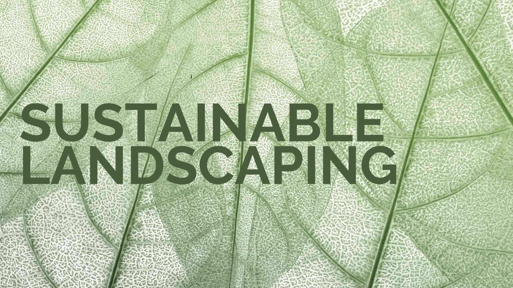

Sustainable landscaping is about creating outdoor spaces that work with nature rather than against it. By choosing practices and materials that conserve resources, support local ecosystems, and reduce waste, homeowners can enjoy beautiful landscapes that leave a lighter footprint on the planet. Here are eight approaches to making your outdoor space more environmentally responsible without sacrificing beauty or function.
Xeriscaping is a landscaping philosophy centered on reducing or eliminating the need for supplemental irrigation. By selecting drought-tolerant plants, improving soil structure, and using mulch to retain moisture, a xeriscaped yard can thrive on natural rainfall alone in many climates. This approach dramatically reduces water consumption, which is especially valuable in regions facing drought conditions or water restrictions.
A well-designed xeriscape is far from the barren, rock-covered stereotype that many people imagine. Ornamental grasses, lavender, sedum, and yucca provide texture, color, and seasonal interest while demanding very little water. Grouping plants with similar water needs together, a practice known as hydrozoning, ensures that every drop of irrigation goes exactly where it is needed and nothing is wasted on plants that do not require it.
Native plants are species that have evolved in your region over thousands of years, developing natural resistance to local pests, diseases, and weather patterns. Because they are adapted to the local climate and soil conditions, native plants require significantly less water, fertilizer, and pesticide than exotic species imported from other regions. They also provide critical habitat and food sources for local pollinators, birds, and beneficial insects.
Incorporating native plants into your landscape design creates a self-sustaining ecosystem that grows stronger and more resilient with each passing year. Native wildflower meadows, shrub borders, and tree canopies support biodiversity while reducing the time, money, and chemical inputs needed to maintain the landscape. Consult your local native plant society or agricultural extension office for species recommendations specific to your area.
Every time it rains, thousands of gallons of water flow off your roof and into storm drains, carrying pollutants into local waterways along the way. Rainwater harvesting captures this free resource and stores it for later use in the garden. A simple rain barrel connected to a downspout can collect enough water to sustain a vegetable garden or flower bed through dry stretches, reducing your reliance on municipal water supplies.
For larger properties, underground cisterns and above-ground storage tanks can hold thousands of gallons, providing a substantial reserve for landscape irrigation throughout the growing season. Rain gardens, which are shallow planted depressions designed to capture and filter runoff, offer another form of rainwater management that cleans stormwater while creating a beautiful, low-maintenance garden feature that attracts butterflies and songbirds.
Organic gardening eliminates synthetic chemicals from your landscape in favor of natural alternatives that build soil health over time rather than depleting it. By avoiding chemical fertilizers, herbicides, and pesticides, you protect the complex web of microorganisms, earthworms, and beneficial insects that keep your soil alive and productive. Healthy soil biology is the single most important factor in growing strong, disease-resistant plants.
Natural pest management strategies such as companion planting, beneficial insect habitat, and manual removal keep pest populations in check without disrupting the broader ecosystem. Organic fertilizers derived from compost, bone meal, blood meal, and fish emulsion feed the soil organisms that in turn feed your plants, creating a sustainable nutrient cycle that improves year after year. The result is a landscape that becomes easier to maintain over time as the soil ecosystem matures and stabilizes.
Composting transforms kitchen scraps, yard waste, and fallen leaves into nutrient-rich humus that is often called black gold by gardeners. Instead of sending organic waste to a landfill where it generates methane gas, composting recycles these materials into a valuable soil amendment that improves drainage in clay soils, increases water retention in sandy soils, and supplies a slow, steady stream of nutrients to plant roots.
Setting up a composting system is straightforward and can be scaled to fit any property size. A simple three-bin system in a back corner of the yard handles leaves, grass clippings, and garden trimmings efficiently. For kitchen scraps, a tumbler-style composter accelerates decomposition and keeps animals away. Spread finished compost as a topdressing on garden beds and lawns each spring to feed the soil and reduce the need for purchased fertilizers throughout the season.
Traditional sprinkler systems lose a significant portion of water to evaporation, wind drift, and overspray onto pavement and structures. Drip irrigation delivers water directly to the root zone of each plant through a network of tubing and emitters, reducing water waste by up to fifty percent compared to overhead sprinklers. This targeted approach also keeps foliage dry, which reduces the incidence of fungal diseases.
Smart irrigation controllers take efficiency a step further by adjusting watering schedules based on real-time weather data, soil moisture readings, and plant water requirements. These systems automatically reduce irrigation after rainfall, increase it during heat waves, and shut off entirely when conditions do not warrant watering. Combined with properly zoned drip lines, a smart irrigation system ensures that every plant receives exactly what it needs while wasting as little water as possible.
Conventional concrete and asphalt surfaces create impervious barriers that prevent rainwater from soaking into the ground, generating large volumes of stormwater runoff that overwhelms drainage systems and carries pollutants into rivers and streams. Permeable paving materials solve this problem by allowing water to pass through the surface and filter into the soil below, recharging groundwater supplies and reducing the burden on municipal stormwater infrastructure.
Permeable pavers, porous concrete, and gravel-set systems are available in a wide range of styles and colors that rival the appearance of traditional paving. These materials work beautifully for patios, driveways, walkways, and parking areas. By choosing permeable hardscape for your next outdoor project, you contribute to healthier watersheds while creating a surface that resists puddling and ice formation, making your outdoor spaces safer and more functional in all weather conditions.
Sustainable landscaping begins at the design stage, where thoughtful planning can reduce resource consumption for the entire life of the landscape. Positioning deciduous trees on the south and west sides of your home provides cooling shade in summer and allows warming sunlight through in winter, reducing heating and cooling costs year-round. Strategic placement of evergreen windbreaks on the north side buffers cold winter winds and can lower heating bills noticeably.
Choosing locally sourced materials for hardscape projects reduces the environmental cost of transportation and supports regional economies. Reclaimed stone, recycled concrete aggregate, and salvaged timber add unique character to your landscape while keeping usable materials out of landfills. An eco-friendly design approach considers every element of the landscape as part of an interconnected system, where each component supports the others and the whole is greater than the sum of its parts.